Taking it apart
I started by dismantling a Symphony Diet 35T piece by piece to understand how it is assembled, serviced and misused. The teardown surfaced 14 problems, from parts that can be fitted the wrong way to an awkward drain plug, an inlet cap that is hard to open with wet hands, unlockable wheels and a flimsy water-level indicator.
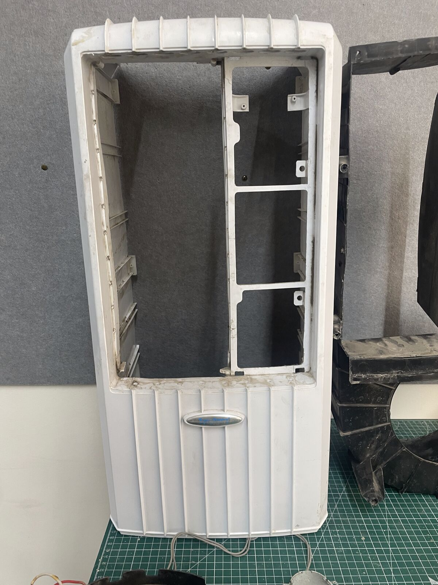
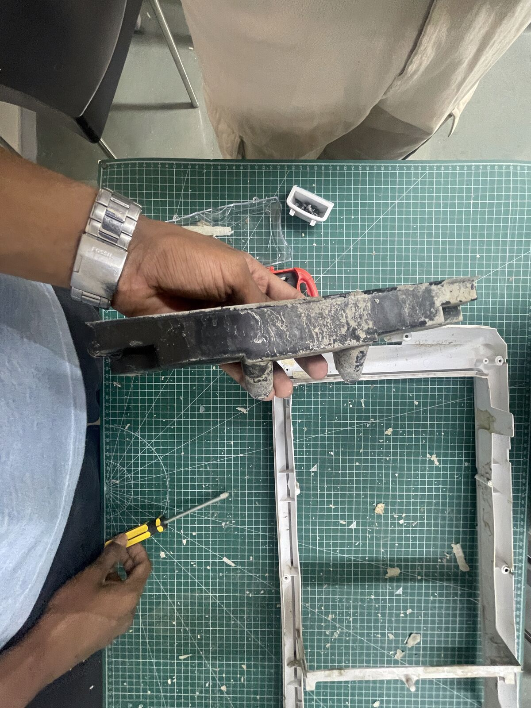
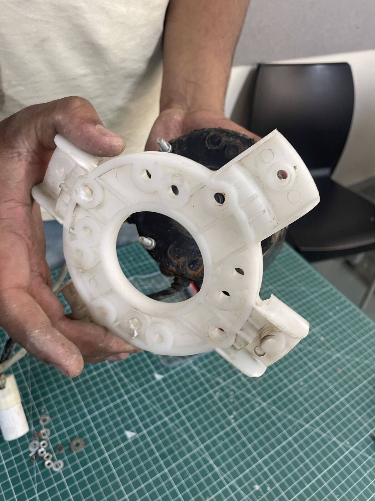
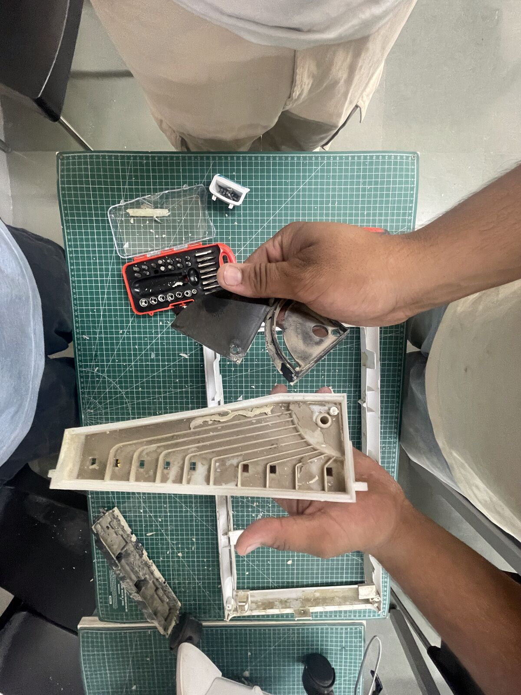
Asking users
A survey of 30 cooler owners sharpened the brief. Good cooling (70%), easy movement (50%) and low power (43%) mattered most; spillage (77%), noise (50%) and bulk (40%) hurt most. Quiet operation, top refill, a visible water level and easy cleaning became must-haves.
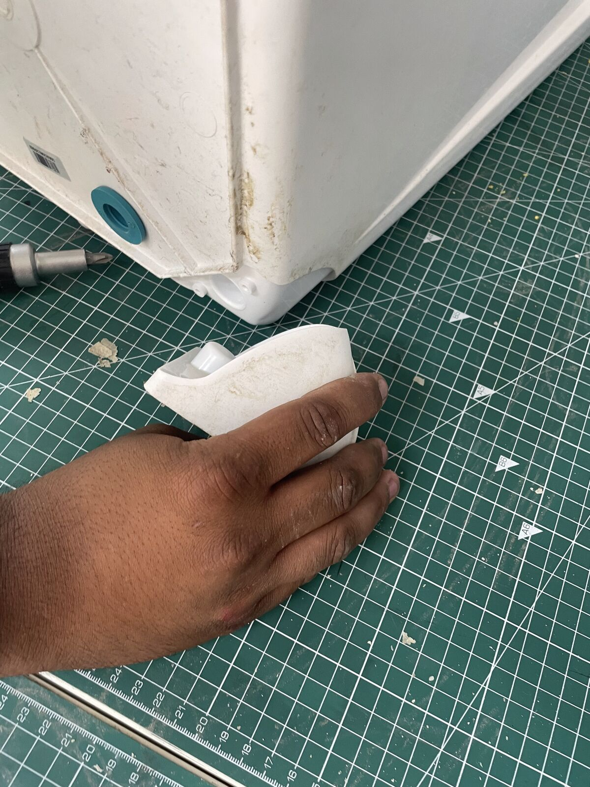
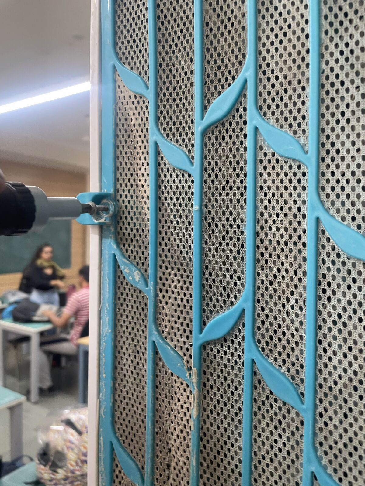
The refined concept
A compact cooler for Indian urban homes with a BLDC motor and airfoil fan, dual water pumps so pads soak evenly, a lit water-level bar, a washable dust filter, 4-way servo vents, a top that hinges open for cleaning, and lockable wheels.
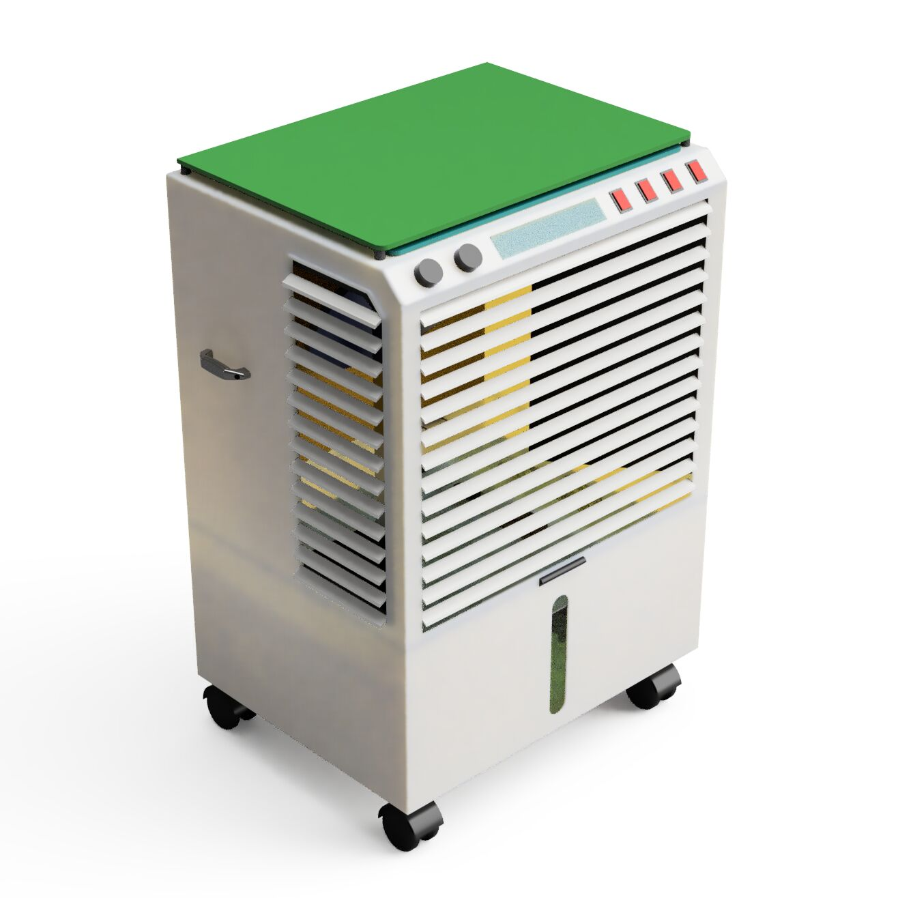
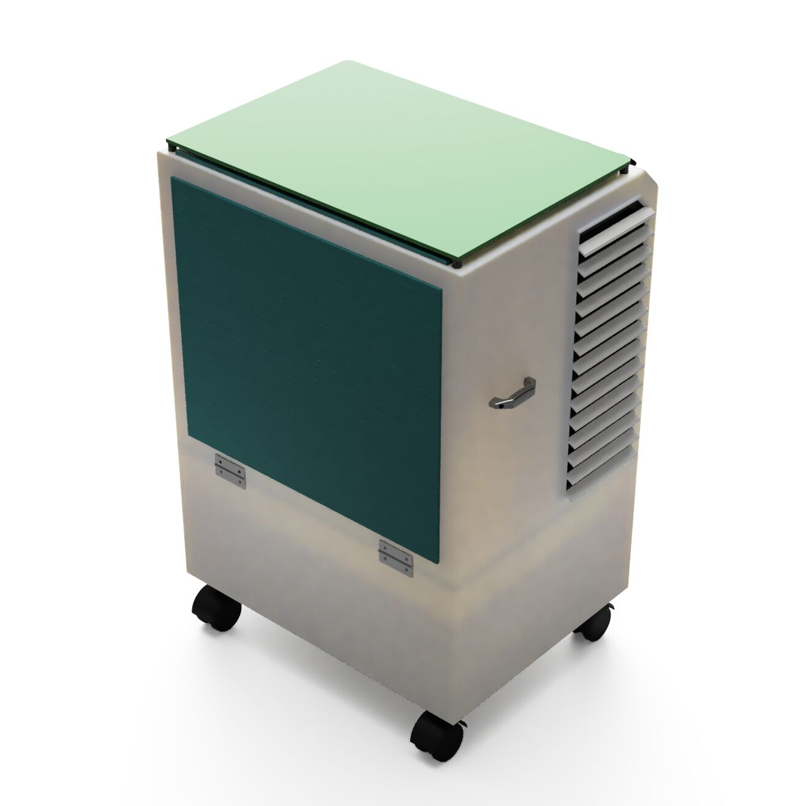
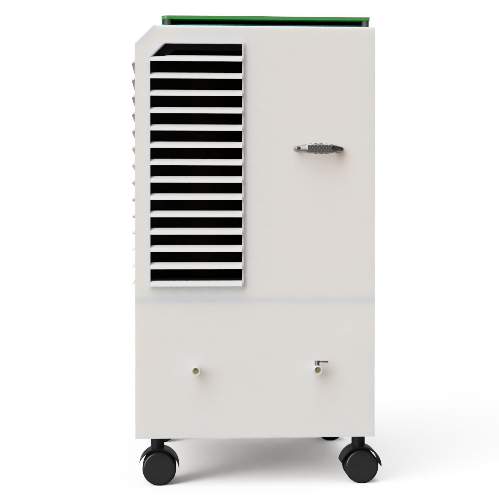
Final renders
Clean white body, a green top panel and clear controls, designed so the right way to use it is the obvious one.
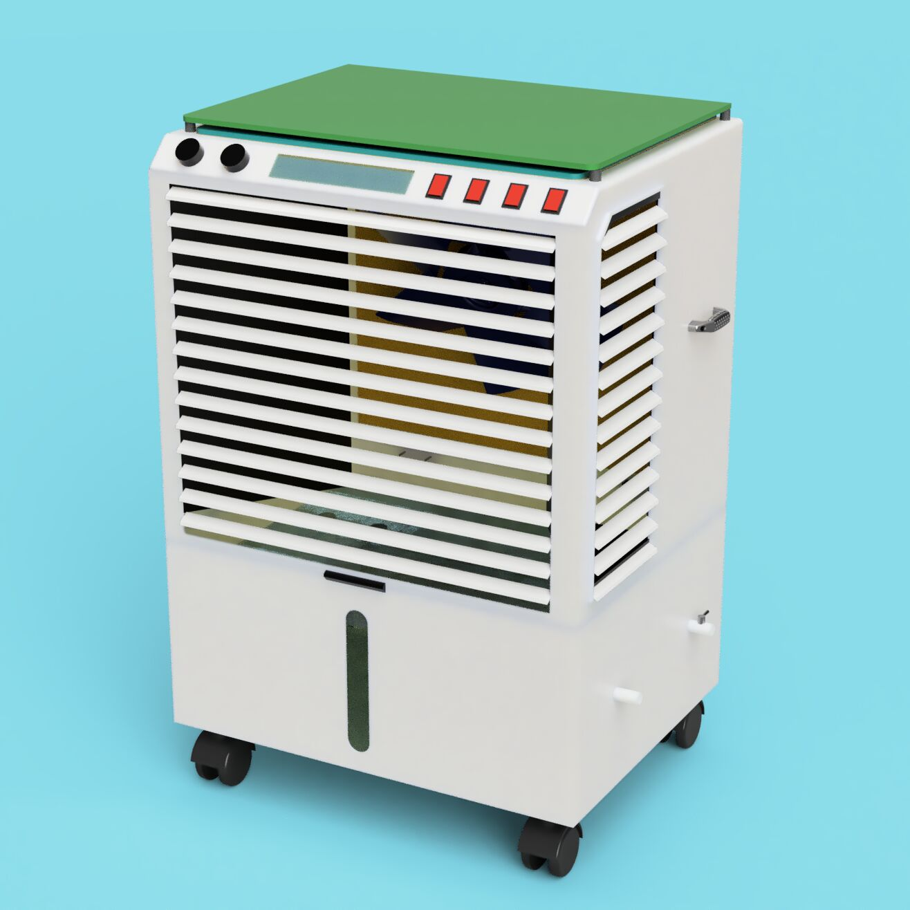
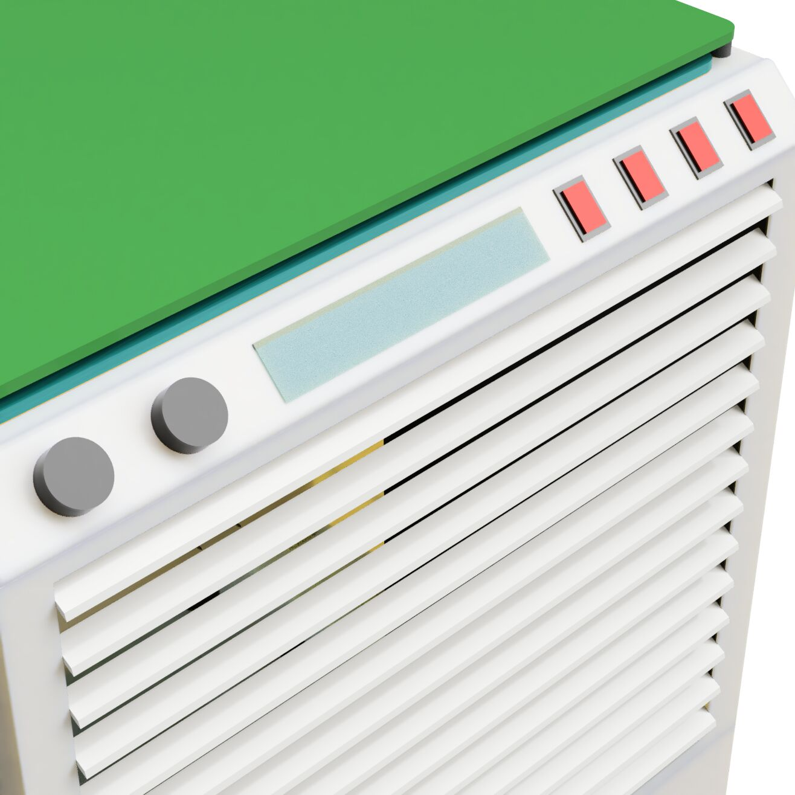
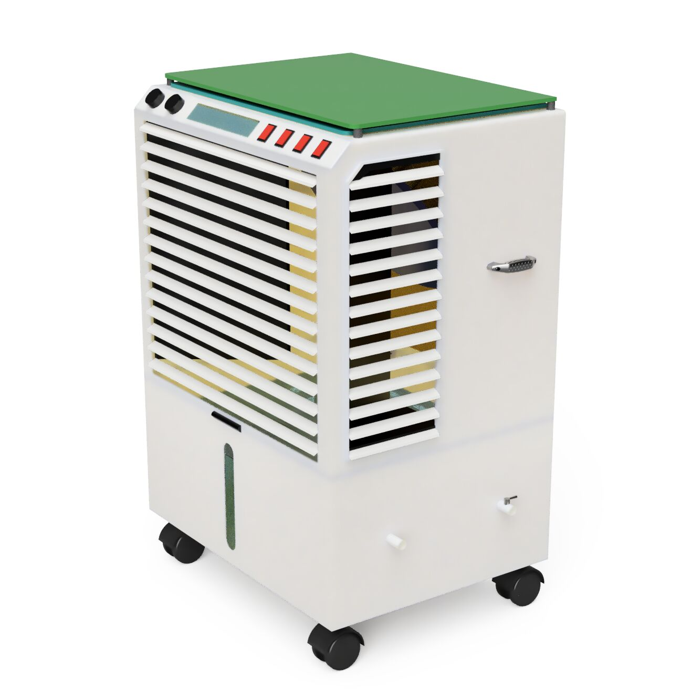